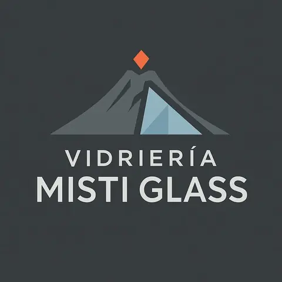
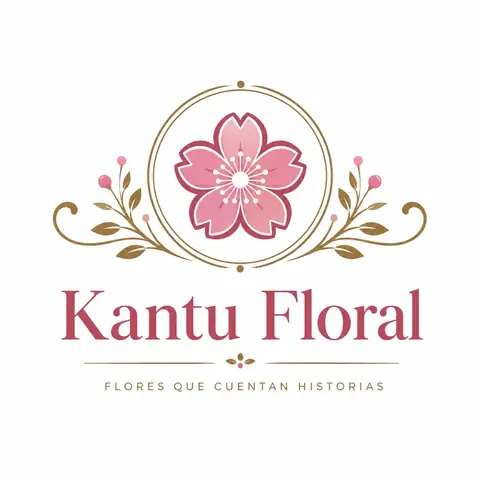
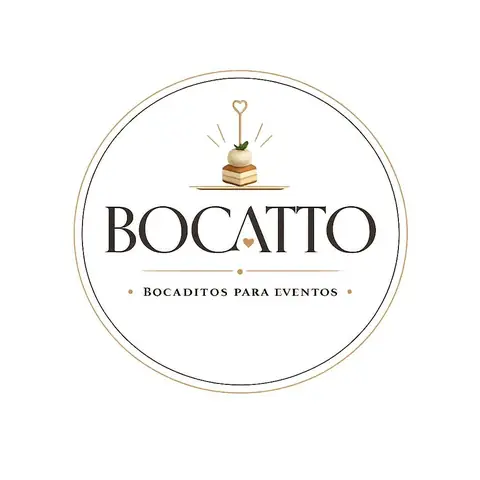

Un grupo empresarial que dirige y administra varias marcas con identidad propia.
Diferentes marcas · una misma visión
Centro de mando de marcas que crecen.
Grupo Tenno dirige, administra y hace crecer varias marcas desde un solo lugar. Cada marca conserva su identidad; nosotros ponemos la estrategia, el orden y la medición.
- Marcas conectadas
- 04
- Áreas de gestión
- 08
- Pasos de trabajo
- 06
- Visión compartida
- 01
01 / Qué es Grupo Tenno
Explicado en 20 segundos.
Conecta estrategia, finanzas, operaciones, ventas, marketing y tecnología para que cada marca avance con orden.
Para sus marcas actuales y para negocios con potencial que quieren gestionarse mejor y crecer.
No somos una marca que reemplaza a las demás. Somos la estructura que las organiza, las conecta y las impulsa.
Trabajamos detrás de cada proyecto para transformar objetivos en acciones concretas: planificamos, coordinamos recursos, medimos resultados, controlamos avances, fortalecemos procesos y acompañamos la evolución comercial de cada negocio.
02 / Qué hacemos
8 áreas conectadas en un solo panel.
Un negocio tiene muchas partes que deben moverse juntas. Centralizamos las áreas clave para que cada marca mantenga su identidad y opere con objetivos claros. Toca cada área para ver qué significa.
Área 01 / 08
Dirección & estrategia
Definimos prioridades, objetivos, planes de acción y criterios para el desarrollo sostenido de cada marca.
En simple: decidir hacia dónde va cada marca y qué hacer primero.
Área 02 / 08
Administración & finanzas
Organizamos recursos, presupuestos, control de gastos, seguimiento financiero y decisiones administrativas.
En simple: que el dinero esté en orden: cuánto entra, cuánto sale y en qué se usa.
Área 03 / 08
Operaciones & logística
Coordinamos abastecimiento, proveedores, procesos, entregas y necesidades operativas de cada proyecto.
En simple: que lo que se vende esté disponible y llegue a tiempo.
Área 04 / 08
Ventas & experiencia
Acompañamos el proceso comercial, la atención, el seguimiento de clientes y la mejora de la experiencia final.
En simple: atender bien, dar seguimiento y que el cliente quiera volver.
Área 05 / 08
Marketing & comunicación
Construimos presencia, campañas, contenidos y lineamientos que hacen visible la propuesta de cada marca.
En simple: que la gente conozca la marca y entienda lo que ofrece.
Área 06 / 08
Innovación & tecnología
Buscamos herramientas, canales y soluciones digitales que mejoren la gestión y abran nuevas oportunidades.
En simple: usar herramientas digitales para trabajar mejor y llegar más lejos.
Área 07 / 08
Supervisión & control
Monitoreamos avances, indicadores e incidencias para detectar necesidades y mantener el rumbo de cada negocio.
En simple: revisar los números y los avances para corregir a tiempo.
Área 08 / 08
Soporte & mejora continua
Resolvemos necesidades transversales y refinamos procesos para sostener una operación cada vez más eficiente.
En simple: resolver lo que surge y mejorar cada proceso, paso a paso.
03 / Cómo trabajamos
Un ciclo de 6 pasos que nunca se detiene.
Así convertimos objetivos en acciones concretas. Al terminar el ciclo, revisamos resultados y volvemos a empezar con lo aprendido.
- 01
Planificamos
Definimos objetivos y el plan de acción de cada marca.
- 02
Coordinamos recursos
Ordenamos personas, proveedores, presupuesto y tiempos.
- 03
Medimos resultados
Con indicadores (KPIs): números que muestran si algo va bien.
- 04
Controlamos avances
Revisamos que el plan se cumpla y detectamos incidencias.
- 05
Fortalecemos procesos
Corregimos lo que falla y reforzamos lo que funciona.
- 06
Acompañamos la evolución
Seguimos el crecimiento comercial de cada negocio.
Y el ciclo vuelve a empezar: mejora continua.
04 / Portafolio actual
4 marcas. Una misma visión.
Cada proyecto conserva su propia personalidad, público y propuesta. Grupo Tenno aporta la estructura administrativa y estratégica que permite desarrollarlos de manera coordinada.

Vidriería Misti Glass
Trabajos especializados y soluciones en vidrio para hogares, negocios y proyectos, con atención a medida y enfoque en acabados funcionales.

Reserva Aqueris
Una propuesta dedicada a seleccionar vinos para compartir, celebrar y acompañar momentos especiales, con atención cercana y personalizada.

Kantu Floral
Flores, detalles y arreglos creados para expresar emociones y acompañar ocasiones especiales con una identidad cálida y cuidada.

Bocatto
Una propuesta creada para disfrutar y acompañar reuniones y celebraciones con bocaditos pensados para diferentes momentos y eventos.
— / Propósito y dirección
Medir, ordenar y crecer con visión de largo plazo.
Gestionar y fortalecer negocios.
Mediante una dirección integral que conecte estrategia, administración, finanzas, operaciones, logística, ventas, marketing y tecnología, convirtiendo objetivos y datos en decisiones medibles y acciones concretas.
Crear, incorporar y escalar marcas.
Consolidar Grupo Tenno como una plataforma de gestión empresarial capaz de hacerlo en distintos sectores, construyendo un portafolio sostenible, innovador y preparado para crecer.
Creemos en una gestión sustentada en indicadores, seguimiento y análisis.
Cada proceso puede mejorar. Revisamos resultados, detectamos oportunidades y ajustamos la operación para crecer con mayor orden, eficiencia y capacidad de respuesta.
No puedes controlar lo que no puedes medir.
05 / Quién lo dirige
Construir marcas es construir la estructura que las hace avanzar.
“Grupo Tenno nace para organizar, conectar, medir y hacer crecer proyectos distintos bajo una misma visión de trabajo.”
- Formación
- Técnico en Administración de Empresas
- Experiencia
- Gestión operativa, logística, control y seguimiento de procesos, supervisión y análisis de datos
- Enfoque
- Organización, indicadores y mejora continua
- Herramientas
- Excel y Power BI, para convertir información en mejores decisiones
Desde la dirección de Grupo Tenno coordina la visión general y el seguimiento de las marcas, conectando decisiones administrativas, comerciales, operativas y digitales para mantener un crecimiento ordenado y coherente.
→ / Asóciate con Grupo Tenno
Tu negocio puede vender más cuando también se gestiona mejor.
Si tienes una marca o empresa con potencial, conversemos. Evaluamos oportunidades de colaboración para ordenar la operación, identificar qué está funcionando y construir un plan de crecimiento con indicadores claros.
Es para ti si buscas…
- Más control administrativo
- Seguimiento de ventas
- Orden en la logística
- Claridad en las finanzas
- Un marketing más sólido
- Procesos bien definidos
- Medición de resultados
Así empezamos
- 01Conversamos
Nos escribes por correo o WhatsApp y nos cuentas sobre tu negocio.
- 02Evaluamos la oportunidad
Revisamos juntos si hay una colaboración posible.
- 03Ordenamos e identificamos
Ordenamos la operación y vemos qué está funcionando.
- 04Plan de crecimiento
Construimos un plan con indicadores claros.
06 / Preguntas frecuentes
Respuestas claras.
¿Qué es Grupo Tenno?
Es un grupo que dirige, administra y hace crecer marcas con identidad propia. Integra estrategia, operaciones, medición y ejecución para que cada marca avance con orden, consistencia y propósito.
¿Grupo Tenno reemplaza a las marcas?
No. Cada marca conserva su personalidad, su público y su propuesta. Grupo Tenno es la estructura que las organiza, las conecta y las impulsa.
¿Qué marcas forman parte del grupo?
El portafolio actual está formado por Vidriería Misti Glass, Reserva Aqueris, Kantu Floral y Bocatto.
¿Qué tipo de negocio puede asociarse?
Una marca o empresa con potencial que necesite mayor control administrativo, seguimiento de ventas, logística, finanzas, marketing, procesos o medición de resultados.
¿Qué son los indicadores o KPIs?
Son números que muestran si algo va bien o mal, por ejemplo cuánto se vende o cuánto se gasta. Nos ayudan a decidir con datos y no solo con intuición.